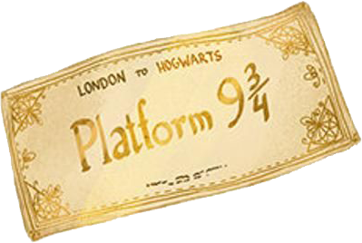
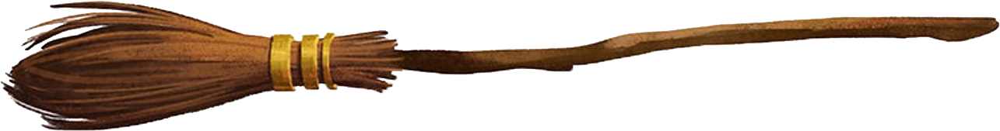
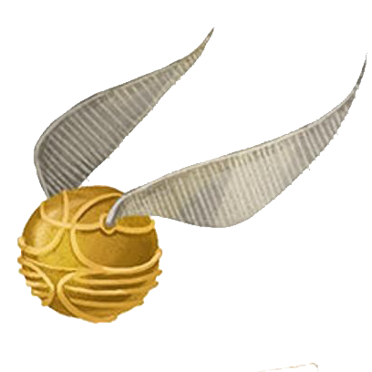
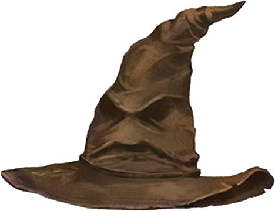
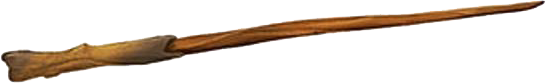

Первая книжка о Гарри Поттере еще не о борьбе мальчика с Большим
Злом
и его
представителем
Воландемортом. Она просто о том, как одинокий сирота, живущий у противных родственников, внезапно
оказывается
волшебником, попадает в закрытую школу магии и обретает настоящих друзей, всегда готовых помочь в трудную
минуту. Наш герой становится увереннее, взрослее, он умеет постоять за себя и понимает, что Хогвартс – его
настоящая семья и настоящий дом.
Вот именно об этом и рассказывает книжка «Гарри Поттер и Философский камень» - о важности
крепкой
дружбы для любого человека.
Книга «Гарри Поттер и Философский Камень»

Глава 1. МАЛЬЧИК, КОТОРЫЙ ВЫЖИЛ
Мистер и миссис Дурсль проживали в доме номер четыре по Тисовой улице и всегда с
гордостью
заявляли, что они,
слава богу, абсолютно нормальные люди. Уж от кого-кого, а от них никак нельзя было ожидать, чтобы они
попали
в
какую-нибудь странную или загадочную ситуацию. Мистер и миссис Дурсль весьма неодобрительно относились к
любым
странностям, загадкам и прочей ерунде.
Мистер Дурсль возглавлял фирму под названием «Граннингс», которая
специализировалась
на
производстве
дрелей. Это
был полный мужчина с очень пышными усами и очень короткой шеей. Что же касается миссис Дурсль, она была
тощей
блондинкой с шеей почти вдвое длиннее, чем положено при ее росте. Однако этот недостаток пришелся ей
весьма
кстати, поскольку большую часть времени миссис Дурсль следила за соседями и подслушивала их разговоры. А
с
такой
шеей, как у нее, было очень удобно заглядывать за чужие заборы. У мистера и миссис Дурсль был маленький
сын
по
имени Дадли, и, по их мнению, он был самым чудесным ребенком на свете.
Заметка 1 В половине девятого мистер Дурсль взял свой портфель, клюнул миссис
Дурсль в
щеку и попытался на
прощанье поцеловать Дадли, но промахнулся, потому что Дадли впал в ярость, что с ним происходило
довольно
часто.
Он раскачивался взад-вперед на стульчике, ловко выуживал из тарелки кашу и заляпывал ею стены.
— Ух, ты моя крошка, — со смехом выдавил из себя мистер Дурсль, выходя из дома.
На углу улицы мистер Дурсль заметил, что происходит что-то странное, — на тротуаре стояла кошка и
внимательно
изучала лежащую перед ней карту. В первую секунду мистер Дурсль даже не понял, что именно он увидел, но
затем,
уже миновав кошку, затормозил и резко оглянулся. На углу Тисовой улицы действительно стояла полосатая
кошка,
но
никакой карты видно не было.

Глава 2. ИСЧЕЗНУВШЕЕ СТЕКЛО
Почти десять лет прошло с того утра, когда Дурсль обнаружили на своем пороге невесть
откуда
взявшегося
племянника,
но Тисовая улица за это время почти не изменилась. Солнце вставало над теми же ухоженными садиками и
освещало
туже
самую бронзовую четверку на входной двери дома Дурслей; оно пробиралось в гостиную, оставшуюся почти
неизменной
с
того вечера, когда мистер Дурсль смотрел по телевизору пророческий выпуск новостей.
Только стоящие на камине фотографии в рамках свидетельствовали о том, что с тех пор
прошло
немало
времени. Десять
лет назад на фотографиях было запечатлено нечто, напоминавшее большой розовый мяч в разноцветных
чепчиках,
но с
тех пор Дадли Дурсль вырос, и теперь на фотографиях был крупный светловолосый мальчик, сидящий на своем
первом
велосипеде, кружащийся на ярмарочной карусели, играющий с отцом в компьютерные игры, мальчик в объятиях
целующей
его матери. Однако ничто на этих фотографиях не говорило о том, что в доме живет еще один ребенок.
Тем не менее Гарри Поттер все еще жил здесь, и в настоящий момент он крепко спал, хотя
спать
ему
оставалось
недолго. Заметка 2 Тетя Петунья уже проснулась и подходила к его двери, и через мгновение
утреннюю
тишину
прорезал ее пронзительный визгливый голос:
— Подъем! Вставай! Поднимайся! Гарри вздрогнул и проснулся. Тетя продолжала барабанить в
дверь.
— Живо! — провизжала она.

Глава 3. ПИСЬМА НЕВЕСТЬ ОТ КОГО
Гарри никогда еще так не наказывали, как за историю с бразильским удавом. Когда ему
наконец
разрешили выходить из
чулана, уже начались летние каникулы, а Дадли уже успел сломать новую видеокамеру, разбил самолет с
дистанционным управлением и, в первый раз сев на новый гоночный велосипед, умудрился врезаться в миссис
Фигг,
переходившую Тисовую улицу на костылях, и сбить ее с ног, так что она потеряла сознание.
Гарри был рад, что занятия в школе закончились, но зато теперь ему негде было скрыться от
Дадли и его дружков, которые каждый день приходили к нему домой. И Пирс, и Деннис, и Малкольм, и Гордон
—
все
они
были здоровыми и
безмозглыми, но Дадли был самым здоровым и самым безмозглым, и потому именно он считался их
предводителем и
решал, что будет делать вся компания. И вся компания соглашалась с тем, что следует заняться любимым
спортом
Дадли — охотой на Гарри.
По этой причине Гарри проводил как можно больше времени вне дома, шатаясь неподалеку и
думая
о
том, что не так уж
много времени осталось до конца каникул, откуда ему светил крошечный лучик надежды. В сентябре он должен
был
пойти в среднюю школу и наконец-то расстаться с Дадли. Дадли перевели в частную школу, где когда-то
учился
дядя
Вернон, — в «Вонингс». Кстати, туда же устроили и Пирса Полкисса. А Гарри отдали в самую обычную
общеобразовательную школу, в «Хай Камероне». Дадли это показалось невероятно смешным.
Как-то в июле тетя Петунья повезла Дадли в Лондон, чтобы купить ему фирменную форму школы
«Вонингс», а Гарри
отвела к миссис Фигг. Как ни странно, теперь у миссис Фигг стало куда приятнее, чем раньше. Выяснилось,
что
она
сломала ногу, наступив на одну из своих кошек, и с тех пор уже не пылает к ним такой страстной любовью,
как
прежде. Так что она не показывала Гарри фотографии кошек, и даже разрешила ему посмотреть телевизор, но
зато
угостила шоколадным кексом, который, судя по вкусу, пролежал у нее в шкафу по крайней мере десяток лет.
Заметка3

Глава 4. ХРАНИТЕЛЬ КЛЮЧЕЙ
БУМ! — снова раздался грохот. Дадли вздрогнул и проснулся.
— Где пушка? — с глупым видом спросил он. Позади них громко хлопнула дверь, отделявшая
одну комнату от другой, и появился тяжело дышавший дядя Верной. В руках у него было ружье — так что
теперь
стало
ясно, что лежало в том длинном пакете, о содержимом которого он никому не рассказал.
За дверью все стихло. И вдруг…
В дверь ударили с такой силой, что она слетела с петель и с оглушительным треском приземлилась
посреди
комнаты.
Заметка 4
В дверном проеме стоял великан. Его лицо скрывалось за длинными спутанными прядями волос
и
огромной клочковатой
бородой, но зато были видны его глаза, маленькие и блестящие, как черные жуки. Великан протиснулся в
хижину
и
пригнулся, но голова его все равно касалась потолка—уж слишком он был велик Он наклонился, поднял дверь
и
легко
поставил ее на место. Грохот урагана, доносившийся снаружи, сразу стал потише. Великан повернулся и
внимательно
оглядел всех, кто был в хижине.
— Ну чего, может, чайку сделаете, а? Непросто до вас добраться, да... устал я...
Великан шагнул к софе, на которой сидел застывший от страха Дадли.
— Ну-ка подвинься, пузырь, — приказал незнакомец.
Дадли взвизгнул и, соскочив с софы, рванулся к вышедшей из второй комнаты матери и
спрятался
за
нее. Тетя
Петунья в свою очередь шагнула за спину дяди Вернона и пугливо пригнулась, словно надеялась, что за
мужем ее
не
будет видно.

Глава 5. КОСОЙ ПЕРЕУЛОК
«Это был сон,—твердо сказал он себе. — Мне приснилось, что ко мне приходил великан по
имени
Хагрид, чтобы сообщить мне, что я пойду учиться в школу волшебников. Когда я открою глаза, то
окажусь
дома в
своем чулане».
Гарри вскочил с постели. Счастье распирало его изнутри, словно он проглотил воздушный
шар.
Гарри
подошел к окну и
распахнул его. Сова влетела в комнату и уронила газету прямо на Хагрида, но тот не проснулся. Затем сова
спикировала на пол и набросилась на куртку Хагрида.
Великан внимательно посмотрел на него, словно напоминая о вчерашнем уговоре. Гарри вдруг понял, что
ему,
всегда
такому вежливому и обращающемуся на «вы» ко всем старшим, Заметка 5 будет легко называть Хагрида
на
«ты».
Потому
что Хагрид относился к нему с большей теплотой, чем кто бы то ни было, и вел себя как друг.